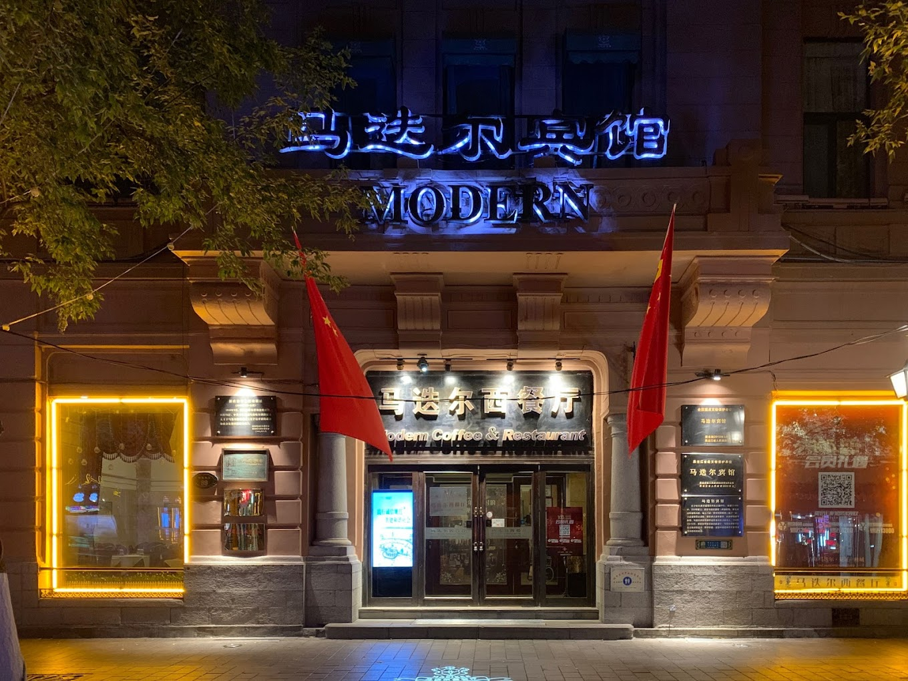
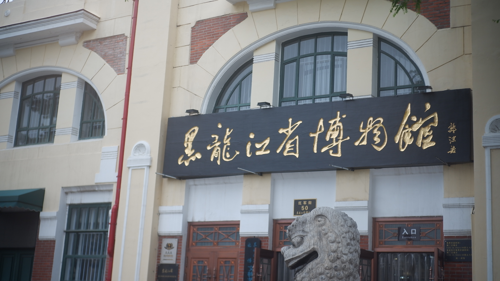
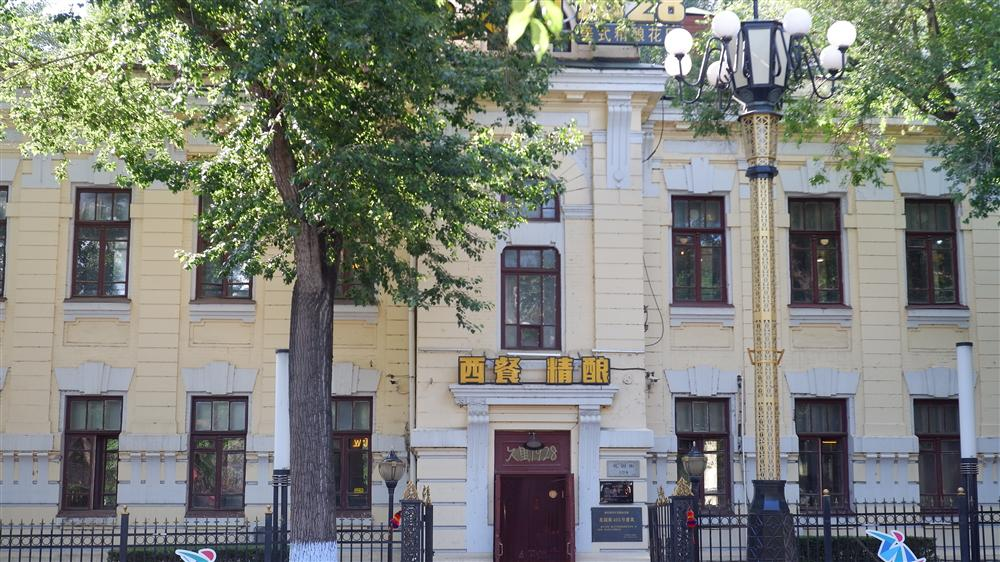

1. Modern Hotel马迭尔宾馆
哈尔滨
2026年7月25日
19世纪末，俄国在东北修建的中东铁路为哈尔滨带来了城市化和繁荣的工商业，也带来了当时正在欧洲和俄罗斯流行的新艺术运动思潮。
新艺术（Art Nouveau）是1890—1910年间在欧洲广泛流行的一种具有国际化特征的艺术、建筑与实用美术风格，尤其在装饰艺术领域表现突出。该风格是对19世纪学院派艺术的反叛，强调从自然中汲取灵感，但并非简单模仿植物或动物形态，而是通过抽象化、风格化的曲线表达建筑与自然的关系。
在1898年至1917年间，哈尔滨经历了大规模的城市规划与建设。作为中东铁路的中心枢纽，哈尔滨的城市布局深受欧洲现代城市规划理念影响。新艺术风格不仅体现在火车站、教堂等公共建筑上，更广泛渗透到银行、商店、住宅及市政设施中。这一时期的建筑摒弃了繁琐的古典装饰，转而采用流畅的铁艺线条、不对称的构图以及具有象征意义的植物纹样，形成了既具国际时尚感又带有浓郁地域特色的"东方莫斯科"风貌。
然而，随着1917年俄国十月革命的爆发及后续局势变动，大量白俄难民涌入，虽然延续了部分建设活动，但受限于经济条件，建筑风格逐渐向折衷主义过渡，纯粹的新艺术风格作品主要集中在1900年至1915年这一黄金时期，之后新艺术作为一种常用的装饰风格在哈尔滨一直流行到20世纪30年代；而作为新艺术运动的起源地，欧洲的新艺术建筑在一战开始后就已失去容身之地。这些建筑不仅是哈尔滨近代城市化进程的见证，也是东西方文化在特定历史时空下碰撞与融合的结晶，为这座城市留下了不可复制的建筑文化遗产。
19世纪末，新艺术运动建筑萌芽于西班牙的世博会，旨在以自然曲线对抗工业化的机械风格。随后，这一风格在法国、英国、比利时、德国、奥地利等国迅速扩散，形成国际性潮流。下面的动画展示的是新艺术建筑在各国蓬勃发展和逐渐衰落的过程。新艺术的潮流从西欧兴起，之后迅速向东扩散到俄罗斯、芬兰等国家，最终通过中东铁路延伸至哈尔滨。拖动地图即可查看不同区域的情况，双击左下角的重播按钮即可再次观看动画。也可以拖动下方进度条查看不同时期新艺术建筑发展传播的大致情况。
新艺术建筑的特色在于大量运用流畅的曲线和自然元素（如花卉、藤蔓）作为装饰母题，体现在铁艺栏杆、窗框及檐部设计中；强调建筑整体风格的统一，从外观到室内家具均遵循同一设计语言；建筑材料多采用青石、砖木混合结构，工艺精致。这些建筑不仅反映了20世纪初欧洲现代设计思潮在远东的传播，也体现了哈尔滨作为国际商埠的文化交融特征，
哈尔滨的建筑还要应对漫长冬季。图中的木檐、坡屋顶和悬挑雨篷都有挡雪、排水等实际用途，弧形窗楣、女儿墙和雕饰则改变立面的节奏。功能和装饰经常落在同一个构件上。
立面图标出12处哈尔滨新艺术建筑的典型特征。把鼠标移到标记上，或直接点击，可以对照实景照片查看每处特征的代表性图片。

建于20世纪初的55处哈尔滨新艺术建筑，最初大多只承担两种角色：住宅与商业。24座为住宅，其余多用于经商。此后百年间，战争与政权更迭反复改写它们的命运——不少建筑一度转为军政机关驻地。到今天，多数建筑经过修缮保护，回归了住宅和商业功能，另有一些改造为博物馆，服务于公共文化事业。随着保护工作持续推进，这些建筑正被越来越多人认识和珍视，成为哈尔滨"东方小巴黎"城市景观的一部分。
55座建筑中，有8处遭到拆除、原址重建或长年荒废，如耀景街、文昌街的原中东铁路高级官员住宅，以及原尼德兰斯中学等。鼠标悬停在色带上，即可查看每条流向的具体数量。
截至2026年，哈尔滨已将全市1310处历史文化建筑纳入系统性保护名录，完成了数字化测绘建档与一体化智慧管理平台搭建。从修缮活化到立法保护，这些百年建筑正逐步走出被遗忘的命运，成为城市可读、可逛、可生活的文化地标。




